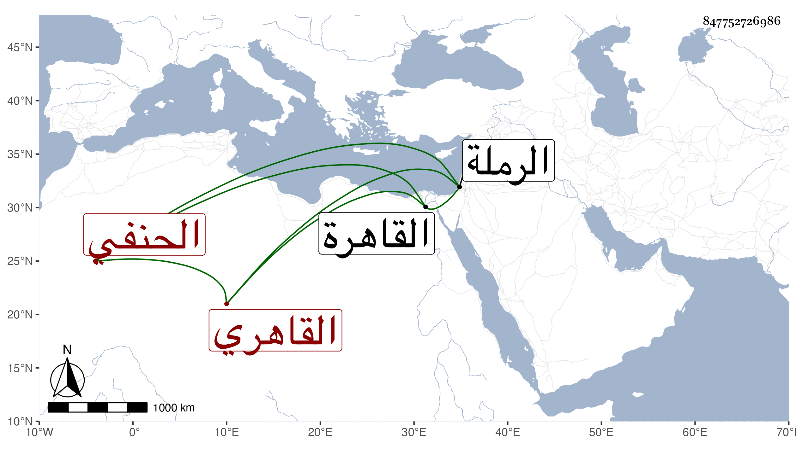

0902Sakhawi.DawLamic.ITO20230111-ara1.EIS1600.847752726986
Biography ID: 847752726986
إبراهيم بن محمد بن محمد بن عمر بن محمود سعد الدين بن محب الدين بن القاضي شمس الدين القاهري الحنفي سبط السراج قارئ الهداية ويعرف بابن الكماخي أحد نواب الحنفية كأبيه وجده الآتيين . ولد في تاسع عشر شعبان سنة خمس وثلاثين وثمانمائة بالقاهرة ونشأ فحفظ القرآن وكتبا وعرض واشتغل في الفقه وأصوله والعربية وغيرها وشارك في الفضائل ومن شيوخه الأمين الأقصرائي والشمني وسمع في البخاري بالظاهرية القديمة محل سكنهم وفي غيره مما قرئ بتلك الأيام . وكان عاقلا متوددا محتشما لطيف العشرة استقر بعد أبيه في تدريس الفقه بالظاهرية المذكورة وبمدرسة قلمطاي بالقرب من الرملة وباشر في عدة جهات كمدرسة يشبك الشعباني بالصحراء وشهادة وقف الحرمين الجاري تحت نظر الحنفية إلى غيرها من الجهات والوظائف . وحج غير مرة وجاور وهو ممن اعتمده الأمشاطي أيام قضائه في الأوقاف والبرقوقية وغير ذلك . مات في يوم الاثنين ثامن ربيع الأول أو ليلة التاسع منه سنة ست وثمانين بعد أن ناب عن القاضي الجديد وقد جاز الخمسين وصلى عليه من الغد واستقر بعده في الظاهرية مظفر الدين الأمشاطي أحد خواصه وفي القلمطانية التاج حفيد إمام الشيخونية . ومما كتبه عنه الشهاب الحجازي من نظمه :
| من رحمة الله فلا تيأسن | إن كنت في العالم ذا مرحمه |
| فمن يكن في الناس ذا رحمة | حق على الرحمن أن يرحمه |
وهو ممن قرض مجموع البدري فطول وكان من نظمه فيه :
| أيا من غاص في بحر المعاني | لما يأتيه من وصف صحيح |
| فما يأتيك من معنى بديع | فمكتسب من الوجه المليح |
مما سيأتي وبينه وبين الزين بن الجاموس وغيره مطارحات رحمه الله .
